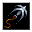
動力式鉤縄 Kinetic Grapnel
Lv 1鍛造術
載っている本：悪戯の魔法書
術者の近接武器に運動エネルギーの細い糸を巻きつけ、そのもう一方の端を近くの敵に向けて撃ち出す。この鉤縄が命中してダメージを与えると、相手に食い込む。すると術者が次にその相手に行う近接攻撃は必ず命中し、少しの殺傷力ボーナスを得る。
レベル: 1 系統: 鍛造術
全401個のうち、プレイヤーが覚えられるのは134個です。覚えられる呪文をレベルの低い順に並べ、モンスターしか使わない呪文は最後にまとめました。威力や射程は、実際のゲームではキャラクターのスキルや能力値によって変わります。

Lv 1鍛造術
載っている本：悪戯の魔法書
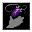
Lv 1転位術
載っている本：悪戯の魔法書、パーティートリックの魔法書
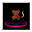
Lv 1召喚術
載っている本：招集の魔法書、悪戯の魔法書
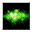
Lv 1錬金術風の魔術
載っている本：初級毒殺者の手引書、悪戯の魔法書
Lv 1妖術死霊術
Lv 1氷の魔術
載っている本：冷気の魔法書
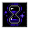
Lv 1呪術
載っている本：衰弱の魔法書
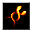
Lv 1妖術炎の魔術
載っている本：猛火の魔法書
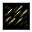
Lv 1地の魔術
載っている本：地占術の魔法書
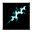
Lv 1妖術風の魔術
載っている本：大気の魔法書
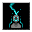
Lv 1死霊術
載っている本：死霊術の魔法書、反生命の魔法書
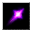
Lv 1妖術
載っている本：下級魔術の魔法書、妖術の魔法書
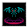
Lv 2召喚術
載っている本：下級魔術の魔法書、招集の魔法書
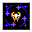
Lv 2呪術
載っている本：災難の魔法書、パーティートリックの魔法書
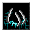
Lv 2死霊術
載っている本：死霊術の魔法書
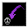
Lv 2転位術
載っている本：空間転位の魔法書
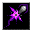
Lv 2妖術転位術
載っている本：空間転位の魔法書
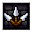
Lv 2鍛造術
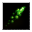
Lv 2妖術錬金術
載っている本：初級毒殺者の手引書、我が沼地滞在記
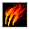
Lv 2炎の魔術
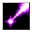
Lv 2妖術
載っている本：妖術の魔法書
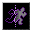
Lv 2転位術
載っている本：下級魔術の魔法書、空間転位の魔法書
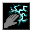
Lv 2妖術風の魔術
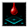
Lv 2死霊術
Lv 2呪術氷の魔術
載っている本：夜盗の魔法書、夢幻の魔法書
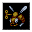
Lv 3鍛造術
載っている本：我が沼地滞在記
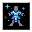
Lv 3氷の魔術
載っている本：戦いの魔法書
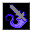
Lv 3呪術
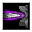
Lv 3転位術
Lv 3死霊術
載っている本：死霊術の魔法書
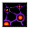
Lv 3炎の魔術転位術
Lv 3転位術
Lv 3風の魔術
載っている本：大気の魔法書、夜盗の魔法書
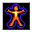
Lv 3呪術炎の魔術
載っている本：炎の魔法書、自然発火の魔法書
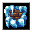
Lv 3氷の魔術
載っている本：冷気の魔法書
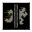
Lv 3地の魔術
載っている本：地占術の魔法書、夜盗の魔法書
Lv 3妖術錬金術風の魔術
Lv 3死霊術
載っている本：戦いの魔法書、夢幻の魔法書
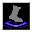
Lv 3呪術
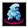
Lv 3氷の魔術召喚術
載っている本：獣の魔法書
Lv 3呪術
載っている本：衰弱の魔法書
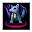
Lv 3召喚術
載っている本：招集の魔法書
Lv 3妖術地の魔術
載っている本：地占術の魔法書
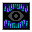
Lv 3呪術死霊術
Lv 3妖術氷の魔術
載っている本：冷気の魔法書
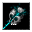
Lv 4死霊術
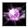
Lv 4妖術鍛造術
載っている本：力の魔法書
Lv 4妖術転位術
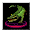
Lv 4召喚術
載っている本：我が沼地滞在記、招集の魔法書
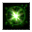
Lv 4錬金術
載っている本：初級毒殺者の手引書
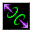
Lv 4転位術
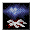
Lv 4死霊術風の魔術
載っている本：衰弱の魔法書
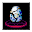
Lv 4召喚術地の魔術
載っている本：荒野の魔法書、獣の魔法書
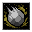
Lv 4妖術地の魔術
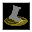
Lv 4錬金術地の魔術
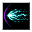
Lv 4転位術風の魔術
載っている本：稲妻の魔法書
Lv 4妖術鍛造術
Lv 4呪術
載っている本：呪術の魔法書、ドラゴンの魔法書
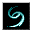
Lv 4風の魔術
載っている本：大気の魔法書
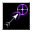
Lv 4呪術転位術
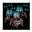
Lv 4死霊術
載っている本：死の魔法書
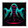
Lv 4死霊術召喚術
載っている本：反生命の魔法書
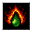
Lv 4炎の魔術錬金術
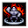
Lv 4炎の魔術鍛造術
Lv 4妖術炎の魔術
載っている本：炎の魔法書
Lv 4炎の魔術錬金術
載っている本：炎の魔法書
Lv 4妖術錬金術
載っている本：妖術の魔法書
Lv 4錬金術地の魔術
載っている本：変成の魔法書
Lv 4風の魔術鍛造術
Lv 4呪術死霊術
載っている本：呪術の魔法書、夢幻の魔法書
Lv 4地の魔術鍛造術
Lv 5錬金術鍛造術
Lv 5錬金術
載っている本：パーティートリックの魔法書
Lv 5召喚術転位術
載っている本：荒野の魔法書、沼沢の書
Lv 5鍛造術
Lv 5妖術炎の魔術
載っている本：ドラゴンの魔法書
Lv 5死霊術地の魔術
Lv 5呪術召喚術
載っている本：荒野の魔法書、獣の魔法書
Lv 5呪術錬金術
載っている本：災難の魔法書
Lv 5地の魔術
Lv 5呪術氷の魔術
Lv 5妖術氷の魔術風の魔術
載っている本：氷結の魔法書
Lv 5妖術風の魔術
載っている本：稲妻の魔法書
Lv 5妖術錬金術
載っている本：自然発火の魔法書、変成の魔法書
Lv 5炎の魔術錬金術
載っている本：自然発火の魔法書、戦いの魔法書
Lv 5死霊術
Lv 5死霊術
Lv 5氷の魔術鍛造術
Lv 5呪術風の魔術
Lv 6錬金術
載っている本：沼沢の書
Lv 6転位術
Lv 6召喚術
載っている本：荒野の魔法書
Lv 6鍛造術
Lv 6炎の魔術風の魔術
載っている本：猛火の魔法書、稲妻の魔法書
Lv 6炎の魔術鍛造術
Lv 6氷の魔術錬金術
Lv 6妖術炎の魔術
載っている本：猛火の魔法書
Lv 6死霊術
載っている本：反生命の魔法書
Lv 6氷の魔術地の魔術
Lv 6氷の魔術地の魔術
Lv 6妖術地の魔術
載っている本：力の魔法書
Lv 6鍛造術
載っている本：力の魔法書
Lv 6転位術
載っている本：次元歪曲の魔法書
Lv 6妖術風の魔術
Lv 7氷の魔術
載っている本：氷結の魔法書
Lv 7呪術召喚術
載っている本：災難の魔法書、獣の魔法書
Lv 7鍛造術
Lv 7召喚術
載っている本：沼沢の書
Lv 7地の魔術風の魔術
Lv 7転位術
載っている本：次元歪曲の魔法書、戦いの魔法書
Lv 7死霊術召喚術
載っている本：死の魔法書、ネクロノミコン
Lv 7炎の魔術地の魔術鍛造術
Lv 7氷の魔術鍛造術
Lv 7妖術
Lv 7呪術
載っている本：呪術の魔法書、災難の魔法書
Lv 7召喚術転位術
載っている本：グラン・グリモア
Lv 7氷の魔術死霊術
Lv 7妖術鍛造術
載っている本：力の魔法書
Lv 8召喚術
載っている本：グラン・グリモア
Lv 8死霊術
載っている本：死の魔法書
Lv 8死霊術
載っている本：ネクロノミコン
Lv 8風の魔術
Lv 8妖術地の魔術
Lv 8妖術錬金術
載っている本：変成の魔法書
Lv 8炎の魔術
載っている本：自然発火の魔法書
Lv 8転位術
載っている本：次元歪曲の魔法書
Lv 8呪術
Lv 9召喚術
載っている本：ドラゴンの魔法書
Lv 9氷の魔術
載っている本：氷結の魔法書
Lv 9死霊術
載っている本：ネクロノミコン
Lv 9妖術炎の魔術
載っている本：殲滅の魔法書
Lv 9鍛造術
Lv 9地の魔術
載っている本：殲滅の魔法書
Lv 9妖術風の魔術
載っている本：殲滅の魔法書
Lv 1鍛造術モンスター専用
Lv 1モンスター専用
Lv 1妖術錬金術モンスター専用
Lv 1呪術モンスター専用
Lv 1死霊術モンスター専用
Lv 1妖術モンスター専用
Lv 2召喚術モンスター専用
Lv 2転位術モンスター専用
Lv 2転位術モンスター専用
Lv 2妖術氷の魔術モンスター専用
Lv 2モンスター専用
Lv 2転位術モンスター専用
Lv 2召喚術モンスター専用
Lv 2錬金術モンスター専用
Lv 2妖術炎の魔術モンスター専用
Lv 2転位術モンスター専用
Lv 2転位術モンスター専用
Lv 2転位術モンスター専用
Lv 2妖術風の魔術モンスター専用
Lv 2風の魔術モンスター専用

Lv 3モンスター専用
Lv 3呪術モンスター専用
Lv 3呪術モンスター専用
Lv 3死霊術モンスター専用
Lv 3転位術モンスター専用
Lv 3風の魔術モンスター専用
Lv 3呪術転位術モンスター専用
Lv 3呪術モンスター専用
Lv 3召喚術転位術モンスター専用
Lv 3呪術モンスター専用
Lv 3呪術モンスター専用
Lv 3地の魔術モンスター専用
Lv 3呪術モンスター専用
Lv 3風の魔術モンスター専用
Lv 3呪術死霊術モンスター専用
Lv 3召喚術モンスター専用

Lv 4転位術モンスター専用
Lv 4召喚術モンスター専用
Lv 4妖術モンスター専用
Lv 4転位術風の魔術モンスター専用
Lv 4モンスター専用
Lv 4呪術錬金術モンスター専用
Lv 4呪術モンスター専用
Lv 4モンスター専用
Lv 4妖術転位術モンスター専用
Lv 4呪術錬金術モンスター専用
Lv 4呪術モンスター専用
Lv 4召喚術モンスター専用
Lv 4モンスター専用
Lv 4地の魔術モンスター専用
Lv 4死霊術モンスター専用
Lv 4死霊術召喚術モンスター専用
Lv 4妖術モンスター専用
Lv 4妖術死霊術モンスター専用
Lv 4モンスター専用
Lv 4呪術転位術モンスター専用
Lv 4妖術風の魔術モンスター専用
Lv 4氷の魔術モンスター専用
Lv 4妖術氷の魔術モンスター専用
Lv 4妖術炎の魔術モンスター専用
Lv 4妖術炎の魔術モンスター専用
Lv 4死霊術モンスター専用
Lv 4召喚術モンスター専用
Lv 4召喚術モンスター専用
Lv 4呪術モンスター専用
Lv 4妖術地の魔術モンスター専用
Lv 4召喚術モンスター専用
Lv 4妖術風の魔術モンスター専用
Lv 4死霊術モンスター専用
Lv 4妖術モンスター専用
Lv 4妖術モンスター専用
Lv 4召喚術錬金術モンスター専用
Lv 4呪術モンスター専用
Lv 4妖術地の魔術モンスター専用
Lv 4呪術モンスター専用
Lv 4呪術モンスター専用
Lv 4呪術モンスター専用
Lv 5死霊術モンスター専用
Lv 5呪術モンスター専用
Lv 5呪術モンスター専用
Lv 5呪術モンスター専用
Lv 5召喚術地の魔術モンスター専用
Lv 5召喚術モンスター専用
Lv 5鍛造術モンスター専用
Lv 5妖術呪術モンスター専用
Lv 5呪術モンスター専用
Lv 5地の魔術モンスター専用
Lv 5妖術氷の魔術モンスター専用
Lv 5妖術氷の魔術風の魔術モンスター専用
Lv 5妖術氷の魔術モンスター専用
Lv 5召喚術モンスター専用
Lv 5呪術モンスター専用
Lv 5呪術モンスター専用
Lv 5妖術モンスター専用
Lv 5地の魔術モンスター専用
Lv 5妖術モンスター専用
Lv 5呪術モンスター専用
Lv 5召喚術モンスター専用
Lv 5地の魔術モンスター専用
Lv 5召喚術モンスター専用
Lv 5召喚術モンスター専用
Lv 5呪術モンスター専用
Lv 5妖術死霊術モンスター専用
Lv 5召喚術モンスター専用
Lv 5妖術モンスター専用
Lv 5死霊術モンスター専用
Lv 5鍛造術モンスター専用
Lv 5風の魔術モンスター専用
Lv 5錬金術モンスター専用
Lv 5転位術モンスター専用
Lv 5地の魔術モンスター専用
Lv 5呪術モンスター専用
Lv 5炎の魔術モンスター専用
Lv 5鍛造術モンスター専用
Lv 5死霊術モンスター専用
Lv 5妖術錬金術風の魔術モンスター専用
Lv 5妖術錬金術風の魔術モンスター専用
Lv 5呪術モンスター専用
Lv 5呪術地の魔術モンスター専用
Lv 5呪術モンスター専用
Lv 5錬金術モンスター専用
Lv 5召喚術モンスター専用
Lv 5妖術モンスター専用
Lv 5妖術氷の魔術モンスター専用
Lv 5妖術氷の魔術モンスター専用
Lv 5妖術地の魔術モンスター専用
Lv 5妖術モンスター専用
Lv 5妖術炎の魔術地の魔術モンスター専用
Lv 5妖術炎の魔術地の魔術モンスター専用
Lv 5妖術炎の魔術地の魔術モンスター専用
Lv 5死霊術召喚術モンスター専用
Lv 5召喚術モンスター専用
Lv 5妖術炎の魔術モンスター専用
Lv 5妖術炎の魔術地の魔術モンスター専用
Lv 5妖術炎の魔術モンスター専用
Lv 5妖術モンスター専用
Lv 5妖術炎の魔術モンスター専用
Lv 5妖術炎の魔術モンスター専用
Lv 5妖術錬金術モンスター専用
Lv 5妖術錬金術風の魔術モンスター専用
Lv 5呪術モンスター専用
Lv 5召喚術モンスター専用
Lv 5呪術モンスター専用
Lv 5妖術地の魔術風の魔術モンスター専用
Lv 5妖術呪術モンスター専用
Lv 5召喚術モンスター専用
Lv 5妖術風の魔術モンスター専用
Lv 5転位術モンスター専用
Lv 5地の魔術モンスター専用
Lv 5妖術モンスター専用
Lv 5妖術モンスター専用
Lv 5妖術地の魔術モンスター専用
Lv 5妖術錬金術モンスター専用
Lv 5妖術モンスター専用
Lv 5死霊術モンスター専用
Lv 5妖術地の魔術モンスター専用
Lv 5妖術死霊術モンスター専用
Lv 5モンスター専用
Lv 5呪術錬金術モンスター専用
Lv 5地の魔術モンスター専用
Lv 5妖術モンスター専用
Lv 5氷の魔術モンスター専用
Lv 5妖術氷の魔術モンスター専用
Lv 5錬金術モンスター専用
Lv 5妖術錬金術モンスター専用
Lv 5妖術モンスター専用
Lv 5妖術モンスター専用

Lv 5転位術風の魔術モンスター専用
Lv 5妖術風の魔術モンスター専用
Lv 5妖術風の魔術モンスター専用
Lv 5氷の魔術風の魔術モンスター専用
Lv 5妖術氷の魔術モンスター専用
Lv 5召喚術モンスター専用
Lv 5妖術死霊術モンスター専用
Lv 5呪術モンスター専用
Lv 5呪術モンスター専用
Lv 6呪術死霊術モンスター専用
Lv 6呪術モンスター専用
Lv 6召喚術モンスター専用
Lv 6死霊術召喚術モンスター専用
Lv 6モンスター専用
Lv 6呪術モンスター専用
Lv 6モンスター専用
Lv 6呪術モンスター専用
Lv 6妖術炎の魔術風の魔術モンスター専用
Lv 6妖術氷の魔術モンスター専用
Lv 6呪術モンスター専用
Lv 6妖術氷の魔術モンスター専用

Lv 6モンスター専用
Lv 6妖術呪術モンスター専用
Lv 6炎の魔術鍛造術モンスター専用
Lv 6呪術錬金術モンスター専用
Lv 6召喚術モンスター専用
Lv 6呪術錬金術モンスター専用

Lv 6召喚術モンスター専用
Lv 6呪術モンスター専用
Lv 6妖術転位術モンスター専用
Lv 6呪術召喚術モンスター専用
Lv 6モンスター専用
Lv 6妖術錬金術モンスター専用
Lv 6妖術錬金術モンスター専用
Lv 6呪術風の魔術モンスター専用
Lv 6呪術モンスター専用
Lv 6妖術炎の魔術モンスター専用
Lv 6妖術モンスター専用
Lv 6死霊術モンスター専用
Lv 6妖術モンスター専用
Lv 6転位術モンスター専用
Lv 6転位術モンスター専用
Lv 6モンスター専用
Lv 6妖術モンスター専用
Lv 6妖術呪術地の魔術モンスター専用
Lv 6妖術呪術モンスター専用
Lv 6妖術死霊術召喚術モンスター専用
Lv 6妖術呪術死霊術モンスター専用
Lv 6妖術錬金術モンスター専用
Lv 6死霊術モンスター専用
Lv 6召喚術錬金術モンスター専用
Lv 6呪術モンスター専用
Lv 6死霊術モンスター専用
Lv 6呪術モンスター専用
Lv 6妖術地の魔術モンスター専用
Lv 6呪術モンスター専用
Lv 6呪術モンスター専用
Lv 6呪術召喚術モンスター専用
Lv 6風の魔術モンスター専用
Lv 6氷の魔術死霊術モンスター専用
Lv 7死霊術召喚術モンスター専用
Lv 7召喚術モンスター専用
Lv 7死霊術召喚術モンスター専用
Lv 7死霊術モンスター専用
Lv 7召喚術モンスター専用
Lv 7妖術氷の魔術モンスター専用
Lv 7妖術モンスター専用
Lv 7転位術モンスター専用
Lv 7召喚術モンスター専用
Lv 7妖術召喚術モンスター専用
Lv 7召喚術モンスター専用
Lv 7妖術死霊術風の魔術モンスター専用
Lv 7妖術死霊術風の魔術モンスター専用
Lv 7呪術モンスター専用
Lv 7呪術モンスター専用
Lv 7召喚術錬金術モンスター専用
Lv 7妖術氷の魔術モンスター専用
Lv 7死霊術モンスター専用
Lv 7モンスター専用
Lv 7死霊術モンスター専用
Lv 7妖術氷の魔術モンスター専用
Lv 7妖術炎の魔術モンスター専用
Lv 7呪術モンスター専用

Lv 7転位術モンスター専用
Lv 7モンスター専用
Lv 7妖術風の魔術モンスター専用
Lv 7モンスター専用
Lv 8死霊術召喚術モンスター専用
Lv 8妖術モンスター専用
Lv 8召喚術モンスター専用
Lv 8炎の魔術召喚術モンスター専用

Lv 8モンスター専用
Lv 8妖術炎の魔術モンスター専用
Lv 8召喚術モンスター専用
Lv 8妖術モンスター専用
Lv 9召喚術モンスター専用
Lv 9妖術氷の魔術モンスター専用
Lv 9召喚術モンスター専用
Lv 9妖術モンスター専用
Lv 9妖術モンスター専用